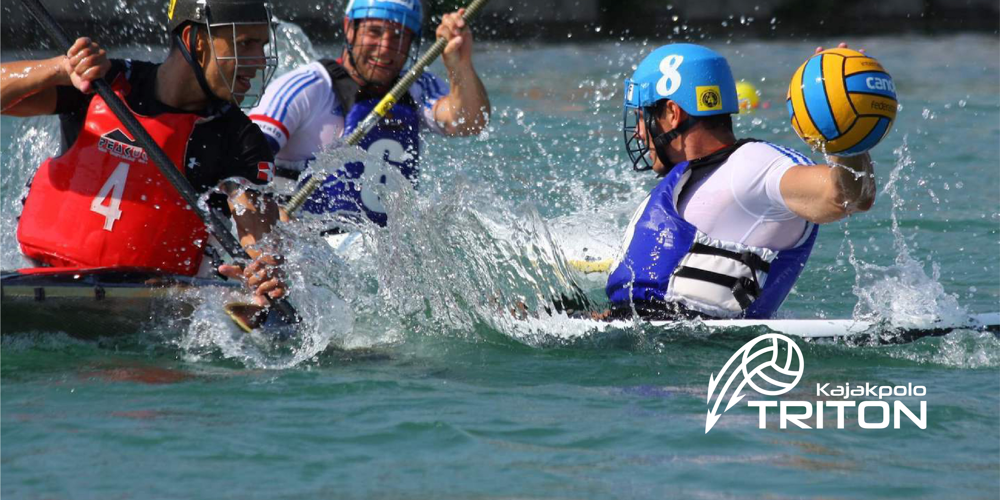

<!--foto-->



<div class="container">
    <div class="row">
        <main class="col-12 col-md-9 col-lg-12 content">	
			<div class="row">
				<div class="col-12 col-md-3 col-lg-2 order-md-12">
					<h1 class="quote2">Foto </h1>
					<a class="btn btn-primary btn-lg leesmeer" href="{{ site.baseurl }}/downloads/beelden.zip" role="button">download</a>
				</div>
			</div>
			<h1 class="text-center merkverhaal" >Fotografie</h1>
			<p class="text-center merkverhaaltekst">De foto’s van VZW triton moeten altijd dynamiek bevatten. Ook optimisme, energie, en sportivieteit. Dit draagt bij tot de visualiteit van de VZW, de kracht van de foto’s is zeer belangrijk. Het is belangrijk te weten dat dit een bachelorproef is en niet alle beelden rechtenvrij zijn. Deze beelden werden gebruikt omdat dit in schoolcontext was toegestaan, wanneer VZW Triton beelden publiceert moeten deze rechtenvrij zijn en mogen het dus niet deze beelden zijn.</p>

<!--logo-->
			<div class="row">
				<div class="col-12 col-md3 col-lg-12  ">
					 <a href="{{ site.baseurl }}/images/voorbeelden/fotografie1.jpg" data-lightbox="image-1" data-title="">	</a>	
				</div>
				<div class="col-12 col-md3 col-lg-12">	
					<h2 class="text-center merkverhaal" >In gebruik</h2>
					<p class="text-center merkverhaaltekst">In volgende beelden zal duidelijk worden in welke stijl foto’s voor allerhande publicaties genomen moeten worden zodat de waarden van de vzw vertegenwoordigd blijven op een correcte manier.</p>
				</div>
			</div>

			<div class="row fotografiemarge">
				<div class="col-12 col-md3 col-lg-12 ">
					 <a href="{{ site.baseurl }}/images/voorbeelden/homegebruik.jpg" data-lightbox="image-1" data-title=""> </a>
				</div>
				<div class="col-12 col-md3 col-lg-5 ">
					<h1 class="quote3">DYNAMIEK </h1>
					<p class=" foto-tekst">De dynamiek in dit  beeld is een voorbeeld van foto’s die heel handig in gebruik zouden zijn. Het is belangrijk dat dit wordt gerespecteerd. Het straalt ook enige professionaliteit uit, dit mede door het sterke kleurgebruik.</p>
				</div>			
			</div>
			<div class="row fotografiemarge">
				<div class="col-12 col-md3 col-lg-12 ">
					<a href="{{ site.baseurl }}/images/voorbeelden/fotografiee.jpg" data-lightbox="image-1" data-title=""></a>
				</div>
				<div class="col-12 col-md3 col-lg-5">
					<h1 class="quote3">ENERGIE </h1>
					<p class=" foto-tekst">Energie is ook één van de waarden van onze vzw. Het is belangrijk dat de beelden naast dynamiek ook energie uitstalen om aan te tonen dat het echt een </br> actieve sport is.</p>
				</div>			
			</div>
			<div class="row fotografiemarge">
				<div class="col-12 col-md3 col-lg-12 ">
					<a href="{{ site.baseurl }}/images/voorbeelden/water-polo.jpg" data-lightbox="image-1" data-title=""> </a>
				</div>
				<div class="col-12 col-md3 col-lg-7 ">
					<h1 class="quote3">SPORTIVITEIT </h1>
					<p class=" foto-tekst">Een foto kan soms een extra touch krijgen als er een uitsnede wordt gemaakt, het wordt een krachtiger beeld. Dit is nu iets waar wij voorstander van zijn. Als het beeld het toe laat ( de resolutie blijft minstens 150 ppi ) kan je een uitsnede maken.</p>
				</div>			
			</div>
			<div class="row">
				<div class="col-12 col-md3 col-lg-12">
					<h2 class="text-center merkverhaal" >Uitsnedes</h2>
					<p class="text-center merkverhaaltekst">Zoals eerder vermeld kan het maken van uitsnedes het beeld een extra touch geven.</p>
				</div>
	   		</div>
			<div class="row uitsnedes">
				<div class="col-12 text-center ">
					<a href="{{ site.baseurl }}/images/voorbeelden/fotografieuitsnede.jpg" data-lightbox="image-1" data-title=""> </a>
					<a href="{{ site.baseurl }}/images/voorbeelden/fotografieuitsnede2.jpg" data-lightbox="image-1" data-title=""> </a>
				</div>			
			</div>
			<h2 class="text-center merkverhaal" >Downloads</h2>

			<p class="text-center merkverhaaltekst">Download de bestaande foto’s, er zijn regelmatig updates.</p>
				<div class="text-center">
					<a class="btn btn-primary btn-lg download" href="{{ site.baseurl }}/downloads/beelden.zip" role="button">download</a>
				</div>

      </main>
    </div>
</div>


